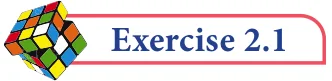

- 1.Which arrow best shows the position of 113 on the number line?

\(- 5 - 4 - 3 - 2 - 1 5\)
- 2.Find any three rational numbers between \(\frac{-}{11}\) and .
- 3.Find any five rational numbers between (i) 4 and \(\frac{11}{5}\) (ii) 0.1 and 0.11 (iii) \(- 1\) and \(- 2\)